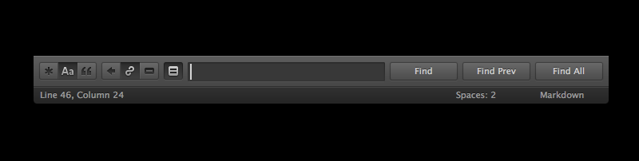
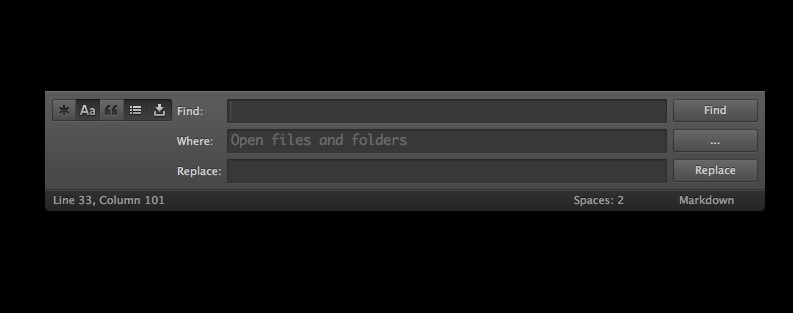

搜寻单一档案的内容

使用快捷键 Command + F 开启单一档案的搜寻面板，输入你要搜索的文字，重复按下 Enter 循环寻找下一个，或是 Shift + Enter 循环寻找上一个，也可以 Alt + Enter 全选所有符合寻找条件的文字。
搜寻面板提供以下几个主要选项（括弧内的快捷键是 for Windows/Linux）：
- Command + Alt + R（Alt + R）：启用/关闭正规表示式搜寻模式（Regular Expressions），进一步了解请参考正规表示式章节；
- Command + Alt + C（Alt + C）：区分大小写（Case Sensitivity）；
- Command + Alt + W（Alt + W）：完全符合（Whole Word）；
此外，单一档案的搜寻面板还提供三个搜寻功能：
- 反向选取（reverse direction）：从底下往上选取搜寻结果，其实就跟一般 Shift + Enter 是一样的效果；
- 循环选取（wrap）：启用这个功能后，搜寻选取到最后一个结果，当继续按 Enter 会重新返回到第一个；
- 只搜寻已选取的文字（in selection）：搜寻范围只在已选取的文字内容中，可配合多重选取功能使用。
在前面的章节曾经介绍过，Sublime Text 2 的 Goto Anything 还可以利用「#」符号进行档案内的模糊搜寻。
搜寻和取代
使用快捷键 Command + Alt + F 开启单一档案的搜寻取代面板，按下 Enter 逐一寻找下一个符合比对的结果，然后用 Command + Alt + E 取代，或是用 Ctrl + Alt + Enter 将全部结果都替换掉。
很多时候使用 Sublime Text 的多重选取功能，可能会比搜寻取代来得更好用唷！:)
累加搜寻（Incremental Search）
使用快捷键 Command + I 打开，这跟一般的搜寻面板没有太大的差别，就……都是搜寻嘛！唯一不一样的地方就是当你按下 Enter 后搜寻面板就会关闭，你可以依照使用喜好来选择使用这两种搜寻面板。
搜寻項目内全部档案的内容

使用快捷键 Command + Shift + F 开启多档案的搜寻面板（括弧内的快捷键是 for Windows/Linux）：
- Command + Alt + R（Alt + R）：启用/关闭正规表示式搜寻模式（Regular Expressions），进一步了解请参考正规表示式章节；
- Command + Alt + C（Alt + C）：区分大小写（Case Sensitivity）；
- Command + Alt + W（Alt + W）：完全符合（Whole Word）；
此外还有两个功能选项：
- 搜寻结果显示上下文（Show Context）：搜寻结果上下多显示两行内容方便判断；
- 搜寻结果储存在缓冲区（Use Buffet）：这会另开一个新的分页显示搜寻结果；
搜寻完以后要开启符合搜寻条件的该档案，可以用滑鼠双击搜寻结果，或是用快捷键 F4/Shift + F4 逐一浏览。
搜寻范围
多档搜寻可以设定只搜寻指定的文件夾路径、档案类型，或是排除他们，在 Where 栏位输入：
- 使用 Unix-style 的路径表示法，例如：../path/to/directories，也可以输入绝对路径；
- 排除特定的档案或目录，例如：
-*.txt或-/path/to/ignore/*； - 只搜寻已开启的目录或档案：
<open files>、<open files>；
不同的条件可以用逗号（,）隔开。
按下 Where 栏位右边的「...」按钮可以显示所有选项。
正规表示式（Regular Expressions）
什么是正规表示式？看维基百科的解释：
正规表示式使用单个字串来描述、匹配一系列符合某个句法规则的字串。在很多文字编辑器里，正则运算式通常被用来检索、替换那些符合某个模式的文字。
Sublime Text 可以用正规表示式比对复杂的文字，将符合规则的文字找出来，这在搜寻结构较复杂的内容时会非常有用，所以你需要学习一些基本的正规表示式语法，但是这本手册不会教你怎么使用它（因为这玩意都可以出一本书了！XD），你可以上网搜寻更多学习资源。
正规表示式看起来就像这样有点恶心的东西，但是他非常有用：
(?:Sw|P)i(?:tch|s{2})\s(?:it\s)?of{2}!
Sublime Text 2 使用的是 Perl 正规表示式的语法。